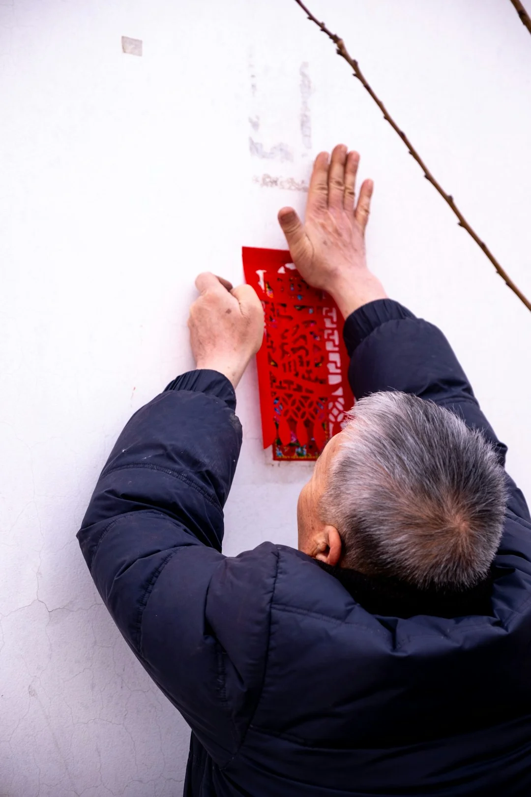
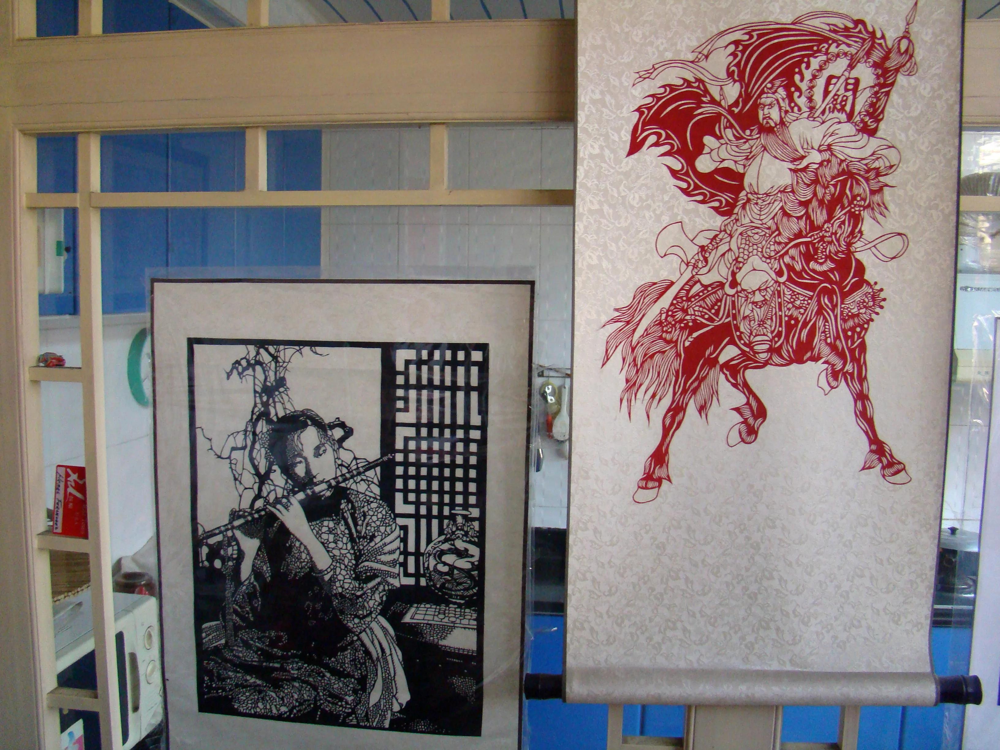

触摸纸张的呼吸
一次在乡村的走访中，我们看到一位老人如何用一把钝剪刀在红纸上剪出连绵的牡丹。她从未学过美术，却懂得对称、留白、虚实——这些概念在纸上自然生长。
纸艺的魅力不仅在于精湛的技艺，更在于它承载的日常情感与手作记忆。它不是博物馆里冰冷的标本，而是活在每个人指尖的温热文化。
无论是朴素的剪纸、严谨的折纸，还是立体的纸雕，每一门技艺都用最简单的材料，诠释着中国人对美、空间和光影的独特理解。
纸艺是时间的艺术，是手与心在纸张上的呼吸与对话。
从剪纸的镂空之韵、折纸的立体之美，到纸雕的层叠空间，
纸张以它独特的温度和质感，连接着千年的东方美学与现代的日常生活。
一次在乡村的走访中，我们看到一位老人如何用一把钝剪刀在红纸上剪出连绵的牡丹。她从未学过美术，却懂得对称、留白、虚实——这些概念在纸上自然生长。
纸艺的魅力不仅在于精湛的技艺，更在于它承载的日常情感与手作记忆。它不是博物馆里冰冷的标本，而是活在每个人指尖的温热文化。
无论是朴素的剪纸、严谨的折纸，还是立体的纸雕，每一门技艺都用最简单的材料，诠释着中国人对美、空间和光影的独特理解。


每一道折痕、每一刀剪口都真实可触，保留了手作最原始的粗粝与温度
顺应材料天然的纹理，还原工艺最初的状态，不求繁复，唯求本真
一张纸可以折三下，也可以折三百下。纸艺讲究心手合一的沉淀与耐心
古老纹样融入现代灯影，传统折法启发前沿设计。连接是最好的传承
窗花不是展览品，而是春节前夜一家人围坐剪出的年味儿；千纸鹤不是摆件，而是病房里悄悄叠起的祝愿。纸艺始终活在人的情感里，而不是博物馆的标签下。
剪纸里的对称与镂空，折纸里的几何与收敛，纸雕里的层次与透光——这些手法暗合了中国人对"虚实相生""以简驭繁"的理解。看懂了纸艺，就摸到了东方审美的一条隐线。
今天的年轻创作者用同样的剪刀和纸张，做灯箱、做空间装置、做书籍插画。纸艺没有停留在过去，它只是换了一种方式继续呼吸。传承与再造它，就是它生长的轨迹。